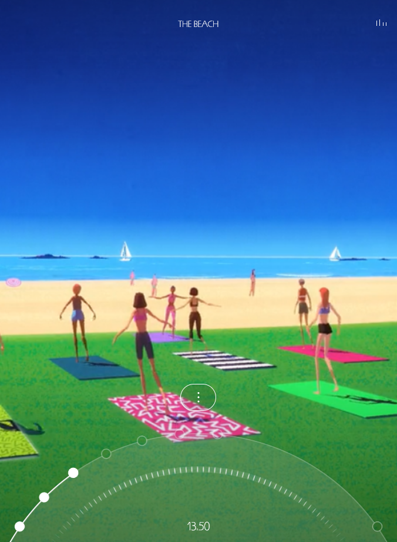
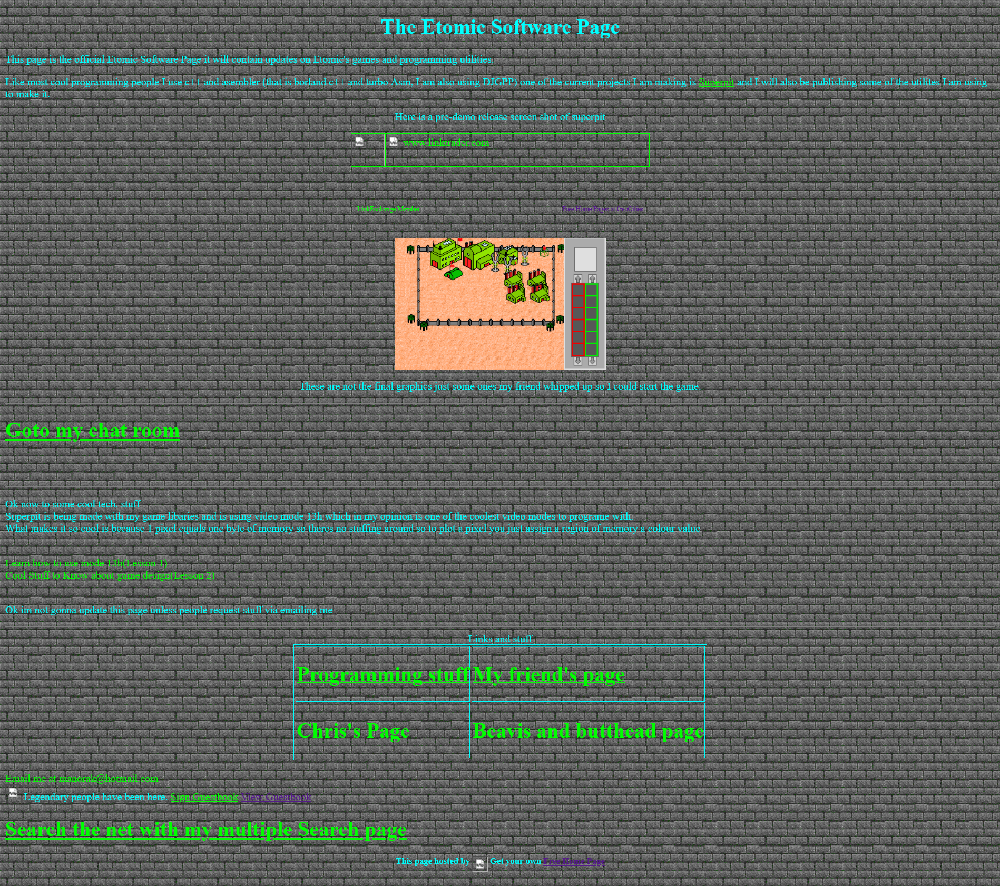

See the images of 2 websites below. You can click on them to take you to the source website. I evaluate each for their audio use.
 The first website uses sound in multiple ways. Ther eis ambient background music, then multiple sound effects that change depending on the scene being depicted. All the audio hear is used with intent - to create a feeling and an atmosphere that the brand wants customer to associate with their product (Richard Mille watches). It enhances comprehension as the sound encapsulates the 80s memphis design movement on which the watches are based. The website shows iconic scenes and sounds of summer - from people walking beside the beach, lounging at the pool, showering, skateboarding, etc. It improves the appeal of the brand as most people enjoy these environments and associated feelings. If a person can buy the product it acts to reproduce these happy moments. The websites novelty and use of various, high-quality sounds enhances retention as visitor's experience a unique and creative journey. I do not notice and disadvantages to the sound. The user even has the option to pause the ambient music if they want to focus solely on the sound effects. The audio is paired with high quality visuals that enhance all the themes introduced here. Even deaf people can experience the message of the website. As shown in the screenshot - a fun and colourful art style is deployed, the text is simple and easy to read.
The second website simply uses sound as background music. However, it does this very poorly. It is a site about learning to program, and the music is a instrumental version of Coolio's Gansta's Paradise. This is completely unrelated to the topic and doesn't aid comprehension of the material. It only serves as a distraction. While it may appeal to some users and aid a retention, it does so for the wrong reasons as it is unrelated to the website's topic. Additionally, it is a low quality audio fle and only makes the website seem unprofessional. This bad audio design is coupled with poor use of multimedia. The background makes use of a tiled brick image that is not aesthetic and makes the text hard to read. The text is in luminous blue and green which only make readablity worse.
I have updated my moodboard to include examples of audio use. You can download it by clicking the screenshot.
I found 2 audio files that are relevant to my topic. The first is a song. The second is a sound effect. You can listen to them below:
I updated my metadata and fustification speadsheet with their details. You can download it here.
I edited the first audio file above, the Algorithms song, using Audacity. I trimmed the start and end of the track to focus it on the main part of the song. I then saved 4 different versions with relevant names. For example - aud001-mada-algorithms-signed-16bit-pcm-0-1.wav. You can see the details on my metadata and justification spreadsheet. Listen to the files below:
WAV (Microsoft) signed 16-bit PCM 6.93mbThe files above have various benefits and drawbacks. Trimming the audio has the advantage of reducing filesize and because I removed the intro and outro of the song, it focused on the main section. The wav file is very high quality but a high filesize, 6.93mb. This is not very optimised. The mp3 files are much better. The medium quality is a lot smaller at 709kb with no perceptable loss in quality. The mono mp3 file is the smallest but the quality is very poor and you lose the stereo sound. So for audio on my website I will use mp3 medium quality as this is a good balance of optimisation and quality. The file below also shows the fade effect in Audactiy. I faded in the intro of the song and then faded it out. This makes the listening smoother as there is no harsh stop of the audio. I may use this tool for the audio on my final site.